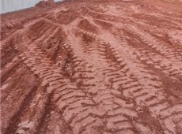

Lola melhora de sua doença

A alguns dias atrás a cachorrinha Lola melhorou de sua doença,
supostamente a mesma consumiu algo que não deveria e os vermes
invadiram seu pequeno corpo.
Após muitos vômitos, dias sem se alimentar e mal beber água Lola
obteve melhora após tratamentos com diferentes tipos de remédios,
ela já se encontra bem e saudável como antes.
Caminhões de terra

Atualmente no bairro está havendo a construção de um condomínio
o que necessita de uma boa quantidade de recursos e caminhões,
o problema é que, a grande quantidade de caminhões carregados de
terra transitando pelas ruas deixa rastros de poeira pela região
o que anda encomodando bastande a vizinhança. Algun vizinhos já
disseram ter passado mal com a poeira, além do encomodo que a sujeira
nas ruas trás.